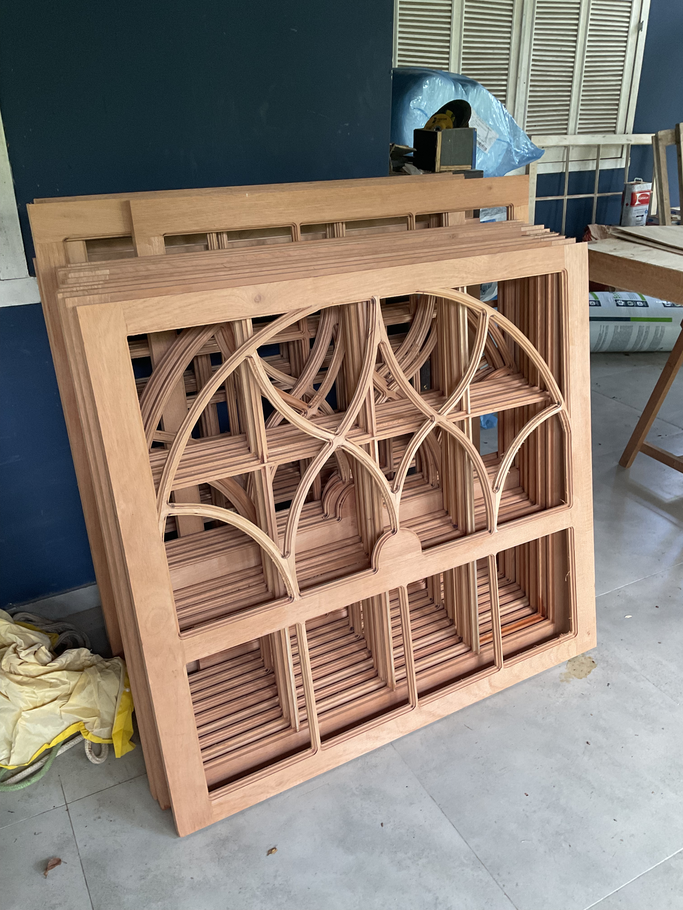

Produção de Caixilharia Técnica e Mobiliário
Processo artesanal de montagem das janelas guilhotina e detalhamento do mobiliário embutido em Cedro-rosa.

1. Ajuste e montagem das réplicas das janelas venezianas e de guilhotina com acabamento técnico.

2. Execução técnica e encaixes da cristaleira embutida, integrando a marcenaria ao espaço restaurado.